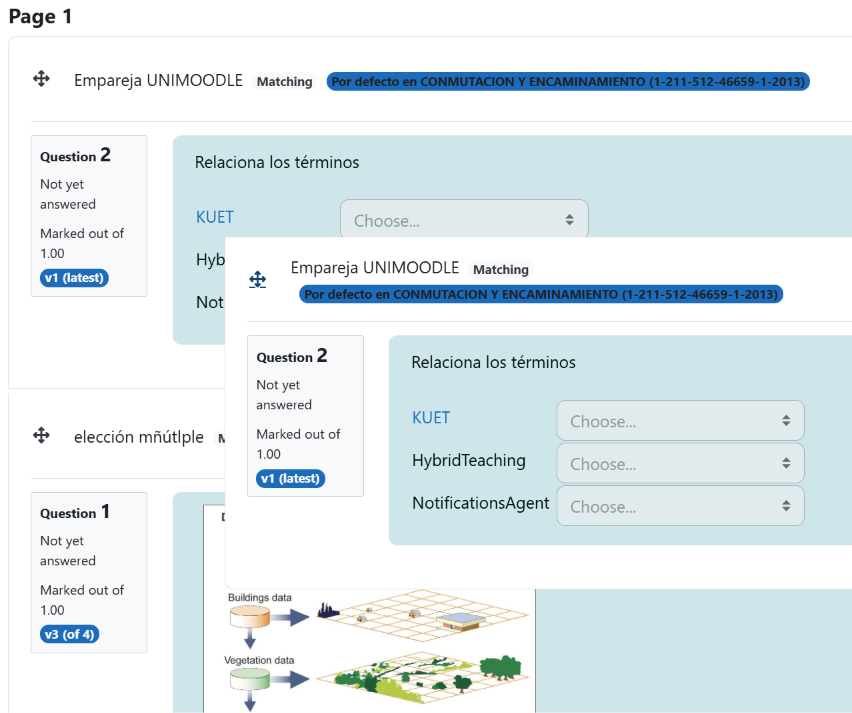
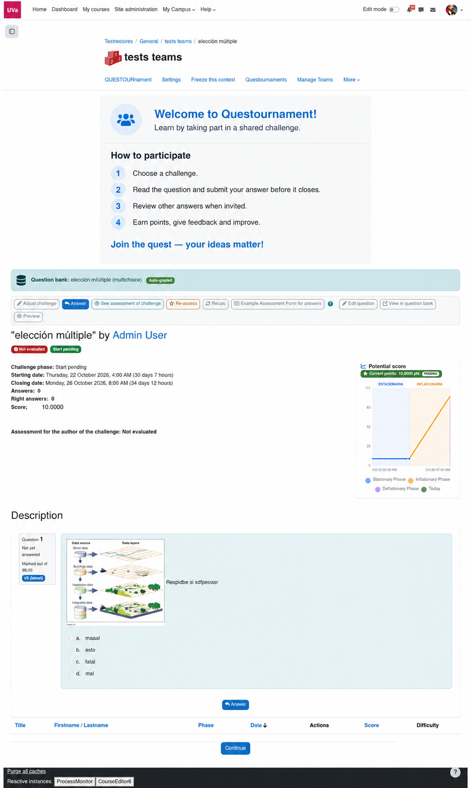
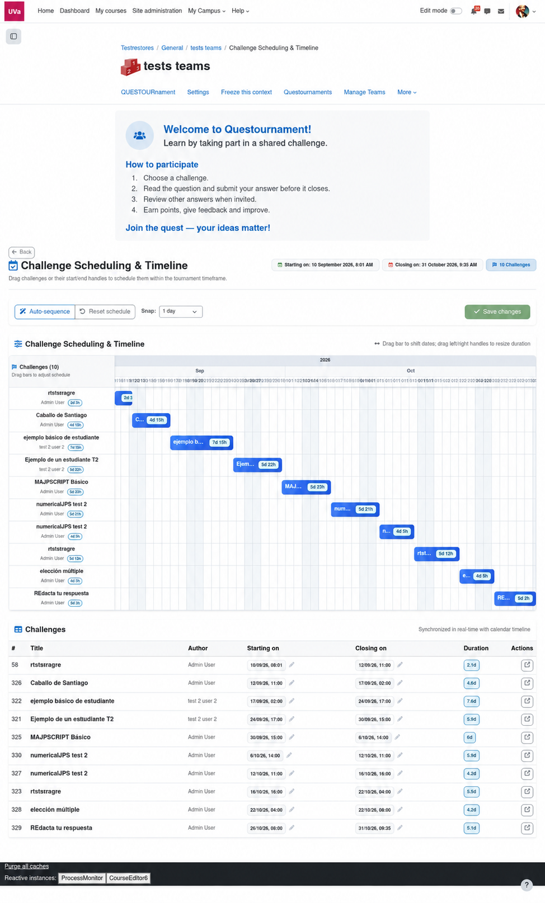

Read
Check the prompt, questions, due date and any files before starting.
Questournament brings challenge creation, Moodle questions, answers, assessment and scheduling into one activity. The available actions depend on your role, capabilities and activity settings.
The activity hub offers list and card views of challenges, deadlines, difficulty, answer counts and points. Open a challenge to read its description and attachments. An approved challenge accepts answers only within its active window and response limit.

Check the prompt, questions, due date and any files before starting.
Use the answer form or Moodle question controls shown for that challenge.
Return to the challenge or answer to see status, allowed feedback and next actions.
A composed challenge renders its ordered question collection using Moodle’s Question Engine. The author can select existing bank questions or create new ones, rearrange them and give each an independent maximum mark. Teachers may edit the composition later; student authors can use the bank only when that activity option is enabled.

Unlike Moodle’s standard editor, you can drag each question directly on its preview and check the order while composing the challenge.


When every question is automatically gradable, submission is graded immediately. With an essay or other manually graded question, the answer waits for human assessment; automatic marks still count in the final weighted grade.
An automatically graded answer that misses the passing threshold is still assessed. A fully automatic answer can show Graded automatically; an essay or mixed challenge remains Not evaluated until a person applies the rubric. Teachers can see marks and feedback through all phases and can remove a manual override to restore the automatic grade when one exists.
Before the challenge closes, learners see whether their automatic answer is correct, their numeric grade and permitted teacher feedback, but not the correct answer. If an author or teacher allows another submission, Answer again starts a new attempt when the learner responds; the previous attempt stays in the history.
With the right capability, a learner can propose a New plain challenge or, if enabled, a New challenge using the question bank. The teacher reviews and approves student challenges before they open. The author can assess peers’ answers with the agreed rubric; depending on activity settings, a teacher may need to validate those assessments.
Comments for the author and comments for students are shown to the appropriate audiences. A learner cannot see teacher-only controls merely by visiting the same page.
Use the approval queue and attention badges to review proposed challenges and unevaluated work. Open a challenge to inspect its questions, answer list, author assessment, rubric and feedback. Edit dates inline in the challenge table or drag and resize bars in Schedule challenges, then select Save changes. The scheduler checks that existing submissions remain inside the challenge window.

Use the individual or team rankings to follow participation. Moodle backups include composed question slots, their order and marks, bank references and answer attempts when user data is included. Always test a restore before relying on a backup for course migration.
Approval pending means the teacher has not approved a proposed challenge. Not evaluated means its author assessment is still due. They are separate conditions and can appear together. The time-based phase then shows whether an approved challenge is waiting to start, in progress or closed.
The available reward can stay stationary, rise while a challenge remains unsolved, and fall after the first correct answer. The answer grade and the potential reward are different: quality determines what share of the available points is earned. Rankings can be individual or team-based according to the activity settings.

Expand to student authorship and composed questions when the group is ready.